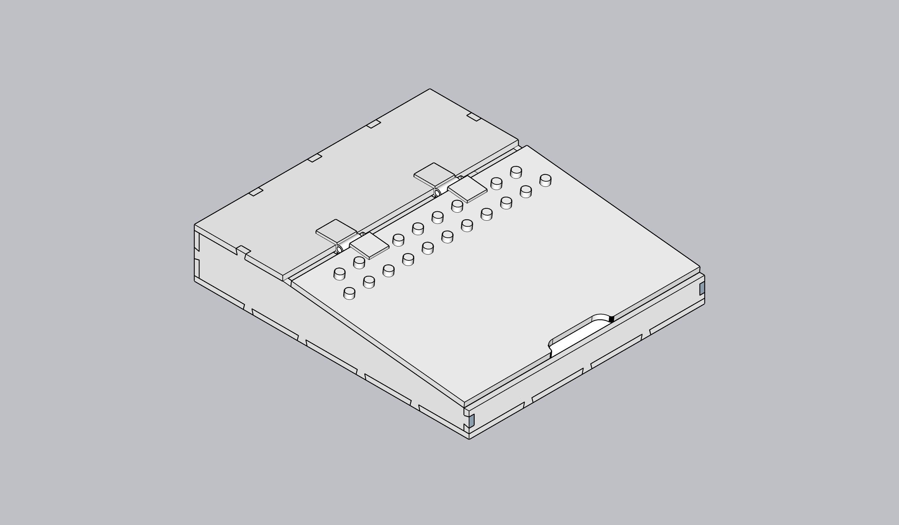
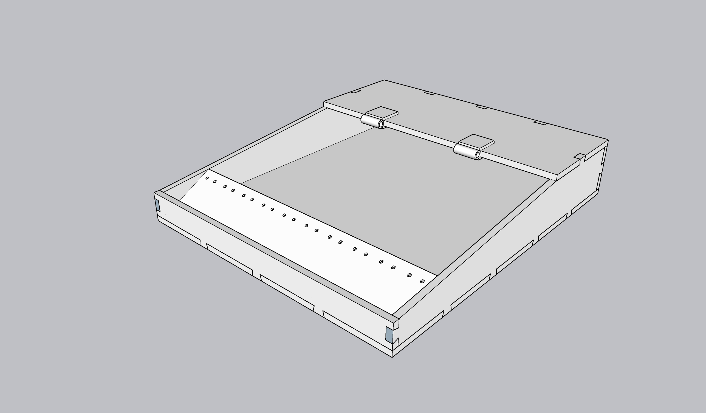
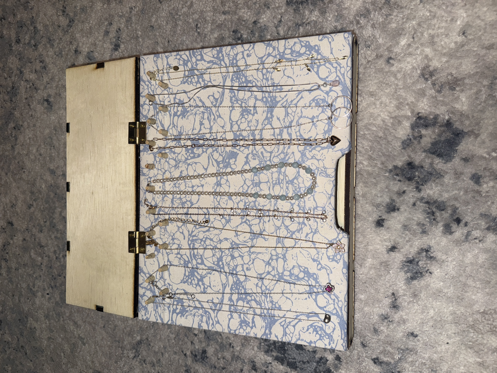
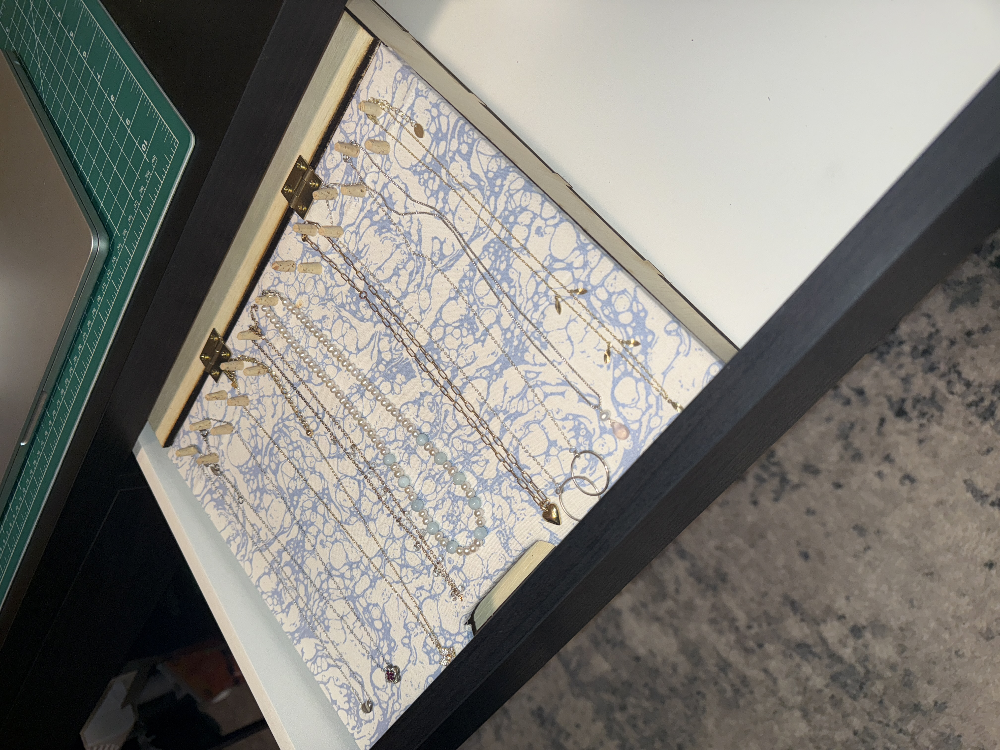

Role: Product Designer
Tools: Sketchup, Physical Prototyping
Project Type: Individual 3D Design Project
The challenge was to design a functional object that would meaningfully improve my quality of life. I chose to create a custom jewelry box specifically sized to fit inside my desk drawer, addressing the limited storage space in my apartment.
Rather than designing a generic container, I focused on precision and intentional space planning. The final product solves an everyday organizational issue while maximizing the usability of a shallow, partially extending drawer.
The primary constraint was the drawer itself. It was significantly shallower than expected and did not fully extend, limiting both height and accessibility. Accurate measurements were critical to ensure the box would slide in seamlessly without interfering with the drawer's movement.
I also needed to account for necklace length, spacing between dividers, and compartment depth. The goal was to prevent tangling while maintaining efficient use of space. Every dimension was carefully considered to balance accessibility, protection, and compact design.
I developed the structure in Sketchup, mapping out precise measurements and internal compartments before fabrication. The digital model allowed me to test proportions and adjust slot spacing to ensure each piece of jewelry would sit securely.

The fabricated model fits precisely within the drawer's constraints and organizes jewelry in a structured, accessible layout. Necklace slots are evenly spaced to prevent overlap, and compartment sizing supports different types of jewelry without wasted space.




The final design successfully addresses the original problem: limited, inefficient storage. The box fits flush within the drawer and allows each item to remain visible and untangled. The structured layout improves both organization and accessibility.
By designing specifically for the spatial limitations of the environment, the solution feels integrated rather than added on. The object functions as a natural extension of the drawer itself.
This project reinforced the importance of designing within constraints. Physical limitations directly shaped every design decision.
I learned how precise measurement, intentional compartment planning, and iterative modeling lead to more thoughtful physical products. Even a small everyday object can demonstrate strong problem-solving when approached with structure and clarity.